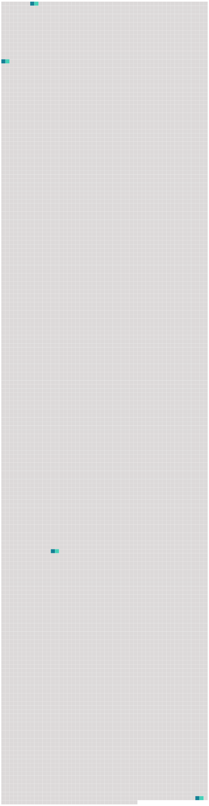

Longueur nb maillons : 4 mentions |
|
La noble femme dont nous allons retracer [la vie] n’ appartient point à l’ histoire politique ; elle n’ est point de la famille des hommes d’ état ; elle n’ a point disputé aux deux grands cardinaux leur pouvoir et le gouvernement de la France ; elle a refusé seulement de leur livrer son âme, de trahir pour eux ses amis et sa cause, cette cause qui lui semblait celle de la religion et de la vertu. [11 phrases]
En 1653, elle fut mariée à François de Choiseul, marquis de Praslin, fils du premier maréchal de ce nom : elle ne manquait ni de beauté ni d’ esprit, mais la figure qu’ elle fit dans le monde ainsi que ses deux frères, ils la devaient surtout à l’ éclat que jeta de bonne heure et à la haute renommée que garda toute [sa vie] leur sœur cadette Marie de Hautefort. [149 phrases] Déjà elle lui avait sacrifié la faveur du roi, celle de Richelieu, son avenir, elle qui n’ avait rien que sa beauté et son esprit, et qui aimait naturellement la magnificence et l’ éclat ; elle fit plus cette fois, elle risqua pour elle quelque chose qui lui était mille fois plus cher que la fortune et [la vie] , elle risqua sa réputation ; elle rejeta cet instinct de pudeur et de retenue qui faisait son charme et sa gloire, qui jusque -là avait fermé son oreille à tout propos flatteur, et ne lui avait pas même permis d’ écrire, sous quelque prétexte que ce fût, le moindre billet à aucun homme, et la superbe créature se condamna au rôle le plus opposé à tous ses goûts et à toutes ses habitudes. [70 phrases] « Elle étoit si bonne et si aimée de tout le monde, dit l’ histoire de [sa vie] , que, lorsqu’ elle se présenta à la porte du roi, les gardes après lui avoir fait part de leur ordre, n’ osèrent s’ opposer à ce qu’ elle entrât. |
 |
Il est possible de télécharger la ressource sur la page Ortolang |
Si vous avez des questions ou vous voyez des erreurs, merci d'envoyer un mail à silvia.federzoni89@gmail.com |